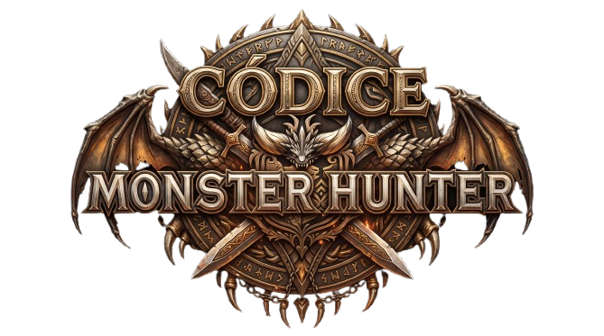
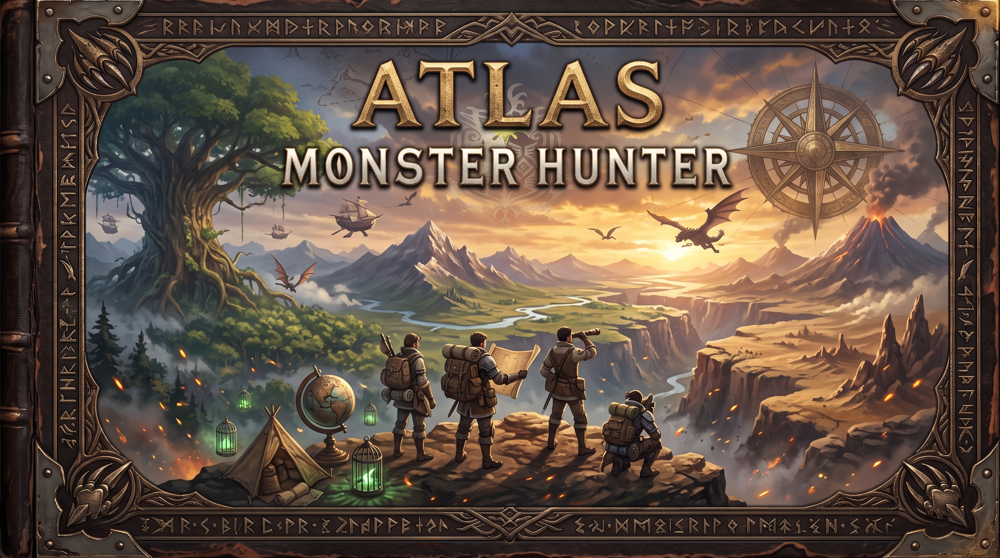

Bosque 🌲
Antiguo Bosque
Una región frondosa y vertical, con vegetación densa, senderos sinuosos y distintos niveles de altura. Conviene prestar atención a los caminos alternativos y a los puntos de recolección.

Monster Hunter · Archivo del Gremio
MONSTER HUNTER CÓDICE
Biblioteca de fauna, equipo y expediciones
Tomo IV · Cartografía y territorios

Los mapas no son solo caminos: cada territorio tiene su clima, sus recursos y sus propias reglas. Estudiarlos antes de salir puede marcar la diferencia.
Una región frondosa y vertical, con vegetación densa, senderos sinuosos y distintos niveles de altura. Conviene prestar atención a los caminos alternativos y a los puntos de recolección.
Una zona árida que combina áreas abiertas con formaciones rocosas y sectores de arena. El terreno puede influir en los desplazamientos y en la forma de aproximarse a las criaturas.
Un territorio de formas y colores poco comunes, con grandes desniveles y caminos que conectan distintas alturas. Explorar con paciencia ayuda a descubrir rutas y puntos de interés.
En Monster Hunter: World, el Valle Putrefacto destaca por su entorno hostil y sus restos orgánicos, mientras que otras zonas volcánicas presentan calor y terreno accidentado. Consulta siempre la región concreta de tu misión.